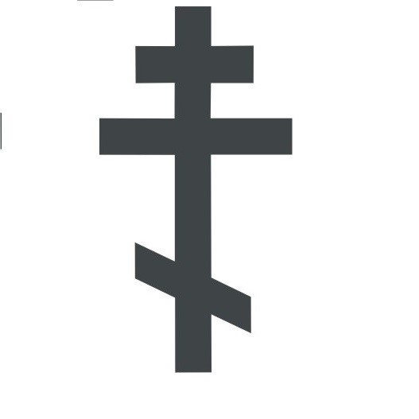
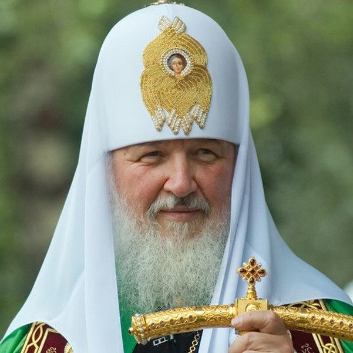
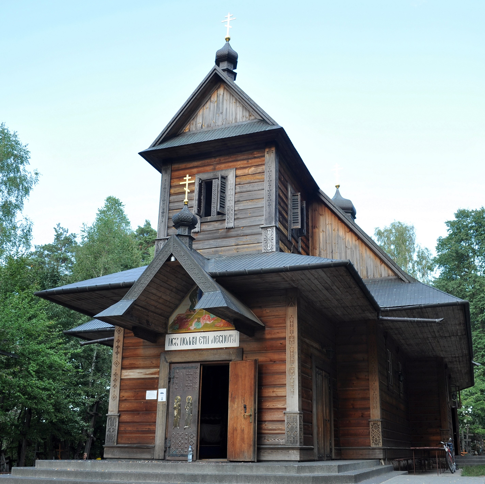
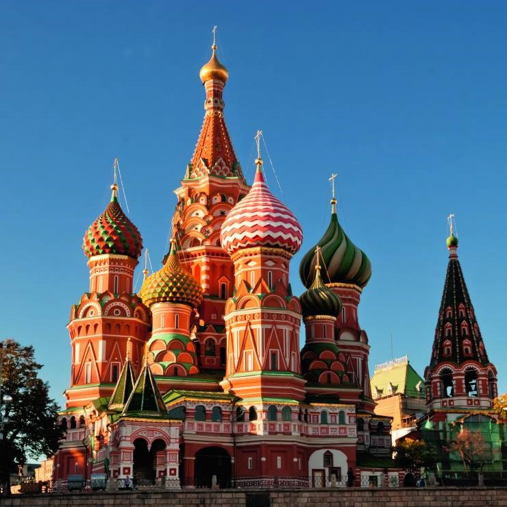
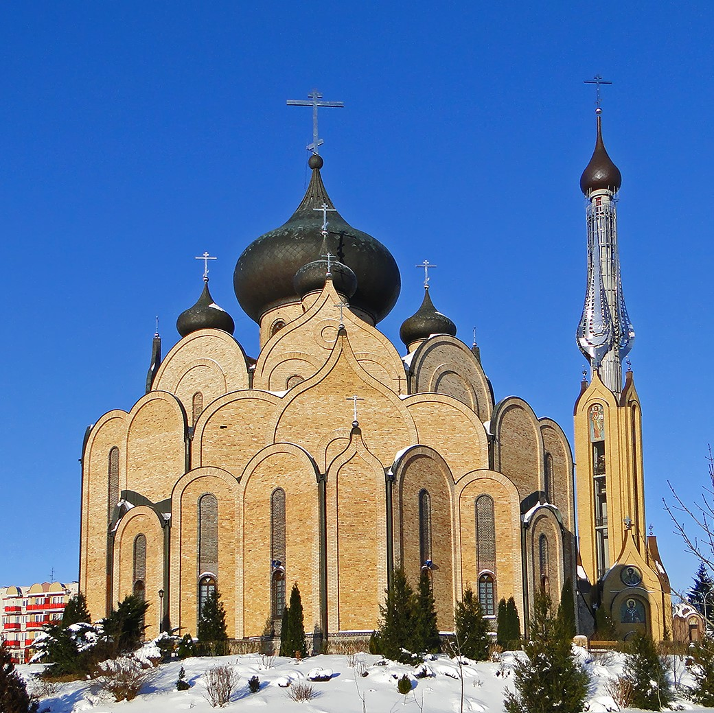
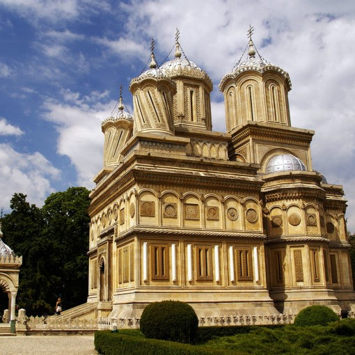
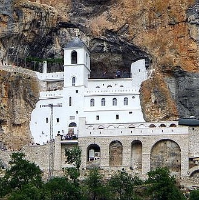
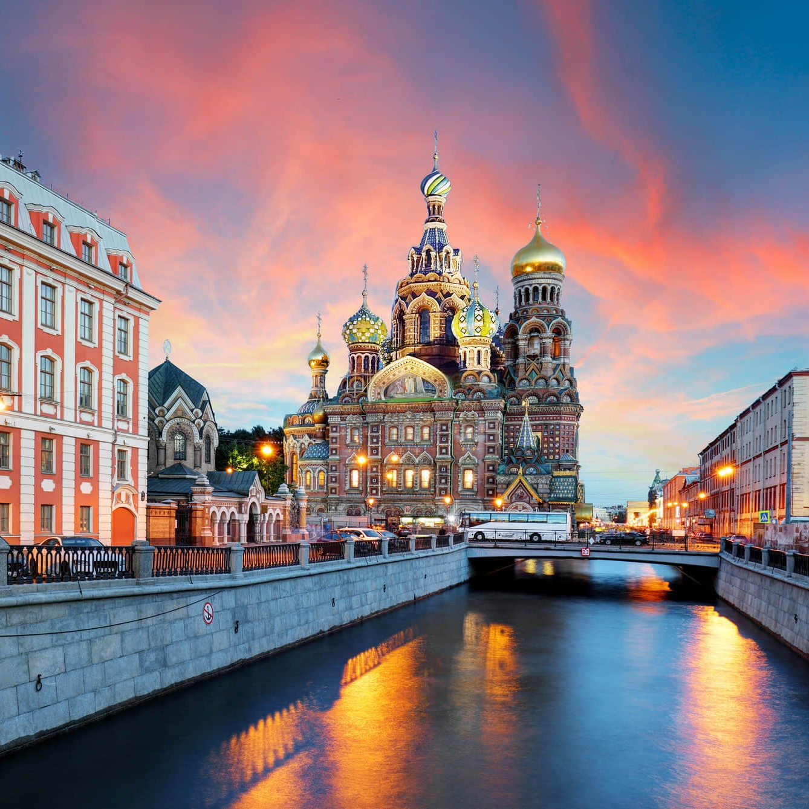

Prawosławie (gr. ortodoxia – „prawowierność”, „prawdziwy kult”, „prawdziwa wiara”) to potoczne określenie chrześcijaństwa wschodniego. Stanowi ono jedną z trzech wielkich gałęzi – obok Kościoła zachodniego i Kościołów protestanckich – chrześcijaństwa w ogóle.
Współcześnie prawosławie wyznaje ponad 180 mln osób, w tym na terytorium byłego ZSRR ok. 80 mln, w Rumunii 14 mln, w Grecji 10 mln, w byłej Jugosławii 9 mln, w Bułgarii 6 mln i w Stanach Zjednoczonych 4 mln.
Ponadto wyznawcy prawosławia żyją w Azji Środkowej i Wschodniej, w Chinach, Korei i w Japonii. Do Polskiego Autokefalicznego Kościoła Prawosławnego należy ponad 500 tysięcy wiernych.
Na terytorium naszego kraju funkcjonuje także Wschodni Kościół Staroobrzędowy (nie posiadający hierarchii duchownej), który liczy około 1 tys. członków.
Najczęściej, mówiąc o początkach Kościoła wschodniego, przywołuje się dzień 16 lipca 1054 r., czyli datę tzw. wielkiej schizmy wschodniej między katolickim Zachodem a
prawosławnym Wschodem. Ma ona jednak charakter umowny. Dzisiejszy brak pełnej jedności między Kościołem rzymskokatolickim i
Kościołem prawosławnym był tak naprawdę wynikiem wielowiekowego procesu – drogi Wschodniego i Zachodniego chrześcijaństwa rozchodziły się stopniowo.
Pierwsze spory pojawiły się już w drugiej połowie II w. Konflikt dotyczył wówczas daty obchodzenia świąt Wielkanocy i został zażegnany na I Soborze Nicejskim.
Niemniej problemów oraz różnic między chrześcijaństwem wschodnim i zachodnim pojawiało się coraz więcej. Przybrały one na sile, kiedy w 330 r.
Konstantyn Wielki przeniósł stolicę cesarstwa do Konstantynopola. Do tej pory bowiem stolicą był Rzym – tam przebywał polityczny (cesarz) i religijny przywódca (papież) ówczesnego świata.
Kiedy głównym ośrodkiem władzy państwowej stał się Konstantynopol, to automatycznie biskup tego miasta zyskał na znaczeniu. W rezultacie mocą uchwał
I Soboru Konstantynopolitańskiego (381) i Soboru Chalcedońskiego (451) wyniesiono Konstantynopol do rangi patriarchatu, a następnie przyznano daleko idące uprawnienia jurysdykcyjne
jako drugiemu patriarchatowi po Rzymie. Decyzja ta spotkała się ze sprzeciwem papiestwa, ale i tak patriarcha Konstantynopola stawał się z upływem czasu coraz bardziej niezależny od Stolicy Apostolskiej.
Jednak to nie tylko rywalizacja między biskupami Rzymu i Konstantynopola o prymat w świecie chrześcijańskim była przyczyną rozłamu. Na przestrzeni wieków pojawiały się między Kościołem wschodnim a zachodnim także spore różnice kulturowe, doktrynalne
i liturgiczne. W Bizancjum posługiwano się greką, Rzym natomiast odszedł od tego języka na rzecz łaciny. W odmienny sposób uprawiano teologię – zachodni teologowie rozumowali w sposób praktyczny i konkretny, natomiast wschodni myśliciele preferowali
bardziej ogólne i abstrakcyjne ujmowanie świata. Ponadto łacinnicy używali do Eucharystii chleba niekwaszonego, a Grecy zwykłego. Inne było również podejście do celibatu – do dziś w Kościele prawosławnym celibat obowiązuje wyłącznie biskupów.
Do 1054 r. doszło do dwóch tzw. schizm przejściowych między Kościołem rzymskim a Kościołem wschodnim – schizmy Akacjusza (484-519) oraz schizmy focjańskiej (861-867). Przyczyną pierwszej były opory chrześcijan z
Cesarstwa Bizantyjskiego przed przyjęciem kanonów Soboru Chalcedońskiego. Z kolei schizma focjańska swoją nazwę bierze od imienia Focjusza, patriarchy Konstantynopola, którego wybór papież Mikołaj I uznał za
niezgodny z prawem. Focjusz został bowiem wyniesiony na ten urząd jako osoba świecka, a taka praktyka na Zachodzie była nieznana. Patriarcha nie zamierzał jednak ustąpić. Co więcej, oskarżył Kościół zachodni o błędy
doktrynalne, takie jak np. dodanie słowa Filioque (łac. „i Syna”) do wyznania wiary, zachowywanie postu w soboty oraz wprowadzenie obowiązkowego celibatu dla duchownych. W 867 r. na synodzie konstantynopolitańskim Focjusz
wraz z patriarchami: aleksandryjskim, antiocheńskim i jerozolimskim rzucili klątwę na papieża Mikołaja I. Łączność między Rzymem a Konstantynopolem została przywrócona za patriarchy Ignacego na soborze w Konstantynopolu w 869 r.
Doktryna prawosławia opiera się na Piśmie Świętym oraz Świętej Tradycji, za którą uznaje orzeczenia pierwszych 7 soborów i pisma Ojców Kościoła. Oznacza to, że Kościół Prawosławny przyjmuje credo nicejsko-konstantynoplitańskie,
niemniej kategorycznie odrzuca wprowadzoną w późniejszych wiekach formułę Filioque (obowiązującą w Kościele katolickim) i twierdzi, że Duch Święty pochodzi od Ojca, a nie „od Ojca i Syna”. Ponadto nie uznaje za dogmat stwierdzeń
o Niepokalanym Poczęciu i Wniebowzięciu Najświętszej Marii Panny, ale równocześnie głosi, że Maryja zasnęła, a na trzeci dzień została wzięta do nieba z duszą i ciałem (tzw. Zaśnięcie Bogurodzicy).
Prawosławni odrzucają także czyściec, prymat biskupa Rzymu w chrześcijaństwie, a zwłaszcza dogmat o nieomylności papieża w sprawach wiary i moralności. Głosząc wiarę w jeden powszechny Kościół, prawosławie odrzuca bowiem ideę centralnej
władzy kościelnej, przyznając natomiast patriarchatowi w Konstantynopolu prymat honorowy.
Znaczne różnice między prawosławiem i katolicyzmem występują w zakresie liturgii i kultu. Kościół Prawosławny uznaje co prawda wszystkie siedem sakramentów, ale praktykuje chrzest przez trzykrotne zanurzenie w wodzie, po którym kapłan
(nie biskup) udziela bezpośrednio sakramentu bierzmowania. Komunia święta udzielana jest wszystkim ochrzczonym wiernym pod 2 postaciami (chleba i wina). Używa się kwaszonego chleba i czerwonego wina.
W liturgii Kościół prawosławny stosuje obrządek bizantyński z językami: starogreckim, starocerkiewno-słowiańskim lub językami narodowymi. Duże znaczenie podczas nabożeństw ma śpiew (zarówno chóralny jak i solowy), jednakże nie używa się instrumentów.
W Kościele prawosławnym życie liturgiczne wyznaczane jest według dwóch różnych kalendarzy: juliańskiego i gregoriańskiego. Stąd przy podawaniu daty świąt widnieją dwie daty. Różnica między nimi wynosi 14 dni.
W Kościele prawosławnym ważne miejsce zajmuje kult obrazów (ikon), wyobrażających postacie świętych, sceny z ich życia, sceny biblijne lub liturgiczno-symboliczne. Mówi się o nich, że są „oknami duchowości” oraz
„ewangelią pisaną kolorami”. Uznaje się również kult relikwii. Zakazane jest natomiast oddawanie czci rzeźbom. W Kościele prawosławnym nie udziela się również odpustów.
Mini galeria

Krzyż prawosławny
r w prawosławiu najbardziej rozpowszechniony jest krzyż o ośmiu końcach. Takie przedstawienie zgodne
jest z najstarszą tradycją, uważaną za najbardziej autentyczną zarówno przez kościoły wschodnie, jak i
zachodnie. Na zachodzie krzyż ten nazywany jest często krzyżem słowiańskim, ponieważ używany jest on
w Cerkwiach słowiańskich, podczas gdy pozostałe Cerkwie prawosławne posługują się symbolem krzyża greckiego.
Ten nazywany jest krzyż bizantyjski lub krzyż rosyjski.

Cyryl I
szesnasty (de facto siedemnasty) patriarcha moskiewski i całej Rusi, sprawujący urząd od 2009.

Monaster Świętych Marty i Marii na Świętej Górze Grabarce
Główna cerkiew klasztorna (Przemienienia Pańskiego) jest jednocześnie
świątynią parafialną. Monaster, cerkwie oraz dwa Domy Pielgrzyma (drewniany i murowany)
tworzą osadę Grabarka-Klasztor. Na terenie osady znajduje się również prawosławny cmentarz.

Sobór Wasyla Błogosławionego
prawosławny sobór w Moskwie, znajdujący się na placu Czerwonym, w pobliżu Kremla.

Cerkiew pod wezwaniem Świętego Ducha
Prawosławna cerkiew parafialna w Białymstoku. Należy do dekanatu Białystok diecezji białostocko-gdańskiej Polskiego Autokefalicznego
Kościoła Prawosławnego. Znajduje się w dzielnicy Wysoki Stoczek, przy ulicy Antoniuk Fabryczny 13.
Zaprojektowana przez Jana Kabaca, wznoszona od lat 80. XX wieku i wyświęcona w 1999 świątynia jest
największą prawosławną cerkwią w Polsce. Jest to budowla jednonawowa i pięciokopułowa, z dwoma ołtarzami. Wygląd zewnętrzny obiektu nawiązuje do
wezwania cerkwi.

Cerkiew Zaśnięcia Matki Bożej
prawosławna cerkiew w Curtea de Argeș (Rumunia).

Monaster Ostrog
prawosławny klasztor w Czarnogórze.

Sobór Zmartwychwstania Pańskiego, Cerkiew na Krwi
sobór wzniesiony w Sankt Petersburgu nad Kanałem Gribojedowa.